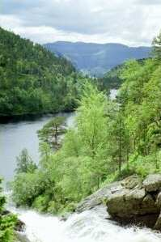

Inoltre potrete visitare il picco montuoso di Pulpit Rock (Pulpito) che è visitato dai turisti di tutto il mondo. Si tratta
di un picco di circa 30mx30m che si sprofonda nella scogliera a 600 m dal famoso fiordo Lysefiorden. Ciò che si prova sulla
punta del picco non si può descrivere. Bisogna provarlo!
Dalla fattoria ci si impiega un’ora di macchina per raggiungere Pulpit Rock, camminando ci vogliono almeno due ore.
Un’altra escursione incantevole è quella SkomaKarnibba, la nostra versione locale di Pulpit Rock. Si può godere della vista
della Regione del RYFYLKE mentre si cammina a 700 m sulla scogliera. Questa camminata non è ovviamente adatta ai bambini,
sentitevi comunque liberi di chiedere consiglio sui circuiti e gli itinerari che sono più adatti alle vostre esigenze!